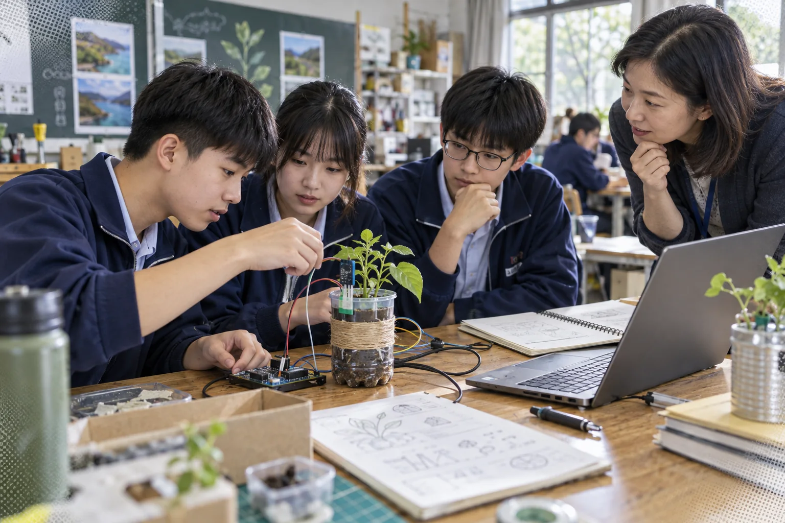

AI EDUCATION
AI 教育｜理解它
從資料、模型與機率出發，認識監督式學習、生成機制、偏誤與風險。
- 資料如何影響結果
- 模型為何會「合理地答錯」
- 人應承擔什麼責任
AI × PEDAGOGY × HUMAN JUDGEMENT
從「會使用」走向「會設計」——給教師的 20 個教學現場
37%
OECD TALIS 2024：已有 37% 的國中階段教師在工作中使用 AI。
生成式 AI 能改善作品品質、縮短備課時間；但若把思考外包，學生得到的可能只是漂亮答案。
教學設計的關鍵，不是「能不能用 AI」，而是它是否促使學生提問、查證、解釋、修正與反思。教師仍是目標、節奏與價值判斷的設計者。
若學生交出更完整的作品，卻無法說明其中的判斷，代表工具提升了表現，還沒有形成學習。請他用自己的話重述、舉例，再回到證據。
原簡報把 AI 教育分成「學原理」與「學應用」。兩者交會時，學生不只會操作，也能判斷工具何時適用、為何出錯。
AI EDUCATION
從資料、模型與機率出發，認識監督式學習、生成機制、偏誤與風險。
AI IN EDUCATION
把 ChatGPT、Gemini、NotebookLM 等工具放進明確的教學流程。
四個動詞，不是一條直線，而是一個反覆迭代的教學循環。
每一次產出，都回到學習目標：學生因此多做了什麼思考？
提示詞工程不是咒語。它把教師原本就在做的事——釐清對象、目標、限制與證據——說得更具體。
你是國中自然科的探究教練，面對八年級學生。
以雲林沿海環境為題，提出可在四週完成的專題方向。
使用校內可取得器材；每案須含資料來源與安全考量。
先給三案，逐案追問我需求；不要直接完成學生作品。
指出不確定處、可能偏誤，以及仍需查證的主張。
「幫我設計一個環境專題。」
「先問我三個問題釐清學生程度、可用器材與時間，再提出方案；每案列出需要查證的假設。」
把 AI 放在準備、鷹架與回饋的位置，把關係、觀察與關鍵判斷留給教師。

從課綱與教材產生多層次例題、常見迷思、生活化類比；教師篩選與修訂。
教師把關：目標對齊、難度、事實讓 AI 扮演辯論對手、歷史人物或診斷教練，一次問一題，先提示再解釋。
教師把關：互動節奏、情緒、參與依共同規準整理作品特徵，提出可行的下一步；不讓 AI 單獨決定分數。
教師把關：脈絡、公平、個別差異比較原稿、提示、AI 回應與定稿，讓學生說明自己保留、修改或拒絕了什麼。
教師把關：學習證據、後設認知先別急著看答案。你已經知道哪些條件？
我知道溫度變高，但不確定是不是造成植物變矮。
很好。要區分「同時發生」與「因果關係」，你會再收集哪一種證據？
先問、再提示、最後才解釋；每一步都要求學生說出理由。
用問題釐清已知、未知與證據。
同一概念可要求白話、類比，再逐步深入。
一次一題，答錯先給提示，最後整理迷思。
「不要直接告訴我答案。先了解我會到哪裡，再一次問一個問題；如果我卡住，先給方向提示，最後請我用自己的話總結。」
NotebookLM 類型的來源導向工具，適合把課文、講義、研究資料與學生作品放進同一個可追溯的學習空間。

當產出變得容易，評量應看見學生如何界定問題、選擇證據、修改 AI 建議，以及為作品辯護。
發想、語句潤飾、建立練習題；須保留使用紀錄。
架構與資料整理；須查證並標註工具、範圍與修改內容。
代寫核心論證、輸入個資、捏造引用，或在禁止使用的評量中求答。


資訊科技專題最適合把 AI 放回真實問題：學生觀察現場、蒐集資料、製作原型，再請 AI 協助整理與檢驗。
AI 生圖、資訊圖表與影音可以降低表達門檻；作品的觀點、取捨、敘事與責任，仍必須由學生承擔。
先寫分鏡與角色設定，再生成素材；比較版本、修正一致性。
資料先查證，圖像再服務訊息；避免「看起來有數據」卻沒有來源。
學生團隊規劃腳本、畫面與旁白，揭露 AI 素材並取得必要授權。
AI 可以加速準備與回饋，卻無法取代教師對學生狀態、班級文化與學習時機的理解。真正的專業，是知道何時介入、何時追問，也知道何時讓學生自己走一段。
工具處理大量資訊；教師看見眼前這一位學生。
AI 素養不是記住功能，而是在每次生成、搜尋與創作時，能主動追問來源、辨別限制，並說明自己的判斷。
把任務、對象、條件與想理解的核心說明白。
回到原始資料，核對作者、日期、脈絡與證據。
比較多個來源，也比較 AI 回答前後是否一致。
刪除不可靠內容，補上觀點、例證與自己的語氣。
揭露工具與範圍，說明保留、拒絕和修改的理由。
差異化不是降低標準，而是讓學生用更適合的方式進入概念、練習表達，再逐步走向共同的核心任務。
先用白話、圖像或生活例子建立共同背景。
從方向提示、句型鷹架到逐步追問，不直接代答。
允許文字、口說、圖表或原型呈現同一項理解。
最後都必須用證據解釋、修正並完成自己的作品。
重點不在「哪個工具最好」，而在學生是否需要比較、推理、創作與說明。以下四種任務都能從一節課開始。
生成同一事件的兩種敘事，找出立場、語氣與被省略的訊息，再重寫成自己的版本。
學習證據：修訂前後＋選擇理由讓 AI 提出地方故事摘要，學生回到史料、地圖與訪談逐句核對，標出不確定處。
學習證據：來源表＋可信度判斷請 AI 提出可能解釋，再由學生設計能排除其中一項解釋的觀察或實驗。
學習證據：假設、變因與修正比較不同資料集的分類結果，找出誤判集中在哪裡，討論資料失衡與公平性。
學習證據：測試紀錄＋限制說明穩定的導入需要共同語言：什麼能用、如何揭露、資料怎麼保護，以及遇到錯誤時由誰一起修正。
先挑三個可觀察學習歷程的單元，不急著全面使用。
以紅黃綠燈說清楚可用範圍、揭露方式與違規處理。
不輸入個資、未公開學生作品、校務機密與敏感紀錄。
讓學生、家長與教師知道：目標是提升學習，而非追逐工具。
從一個小任務開始，留下學習證據；每週只多推進一步，月底便能完成一次可複製、可討論的教學循環。
挑選學生常卡住、又容易查證的概念，寫下成功標準。
產出：一張課堂任務卡只讓 AI 支援提問、例子或回饋其中一項，保留對話紀錄。
產出：提示與學生反應比較使用前後的作品與口頭說明，找出真正有效的部分。
產出：三則課堂觀察和同儕共備，刪掉多餘步驟，補上查證與風險提醒。
產出：可重用教案 v2從 Canva 的「AI 課程融入」與「AI 時代的資訊教育」投影片延伸：教師的價值，不只是傳遞內容，而是安排學生何時探索、何時受挫、何時查證，以及何時把想法說清楚。
Canva 的「AI 問題地圖」提醒我們：生成內容即使說得流暢，也可能把位置、數據或品種關係標錯。最好的教學，不是禁止使用，而是把錯誤變成查證任務。
請 AI 整理現象、提出假設或製作初步地圖；保留原始提示與回答。
圈出可被驗證的地名、年份、數字、因果與引用，不用一次相信整段文字。
查官方紀錄、實際地圖、一手訪談或課堂量測，並比較至少兩個來源。
修正錯誤、標示仍不確定之處，說明 AI 在作品中做了什麼、沒有做什麼。
「智慧不是輸入提示，
而是持續的對話。」
先從低風險、可查證的小任務開始；和學生一起訂規則、看歷程、談選擇，再逐步擴大使用。